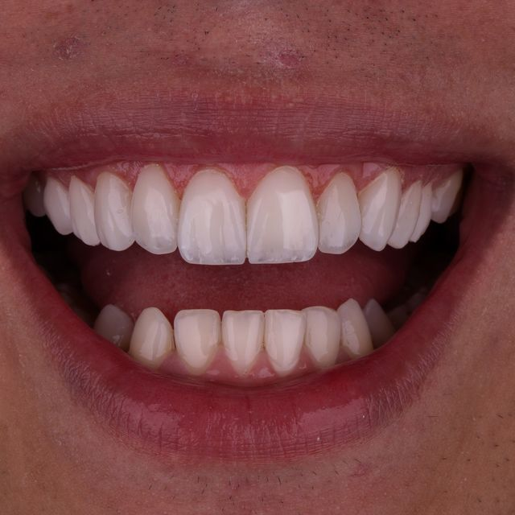
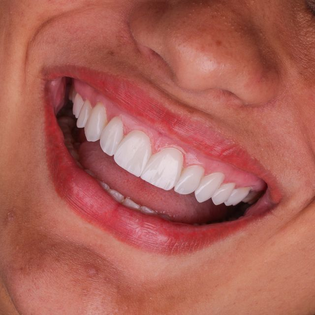

Exclusivo para dentistas
6 meses com a gente ao seu lado, transformando as lentes em uma operação que fatura R$ 50 mil por mês
Você terá a nossa metodologia, nosso acompanhamento e nossa experiência dedicados à construção da sua operação.
Faça a sua aplicação para a Operação 50K e aguarde nosso time entrar em contato ↓
Nós vamos resolver juntos o seu problema de faturamento estagnado.
Você já tem alguns pacientes, já atende e já fatura alguma coisa.
O problema não é falta de paciente. É que mesmo com muito esforço, seu resultado não aumenta todo mês.
O que separa um mês de R$ 20 mil para um de R$ 50 mil é um método que une posicionamento, aquisição, comercial e produto e faz toda a diferença na hora de atrair pacientes de lentes, converter oportunidades e aumentar o valor dos seus casos.
São esses ajustes que nós vamos identificar na sua clínica.
E que vão te fazer recuperar o investimento na Operação 50K com novos casos de lentes.
Os seus próximos 6 meses serão assim:
-
#1
Construa uma marca que faça o paciente desejar realizar lentes com você. Vamos estruturar seu posicionamento, sua comunicação e seus conteúdos para aumentar a percepção de valor do seu trabalho e fazer com que o paciente chegue até você já entendendo por que escolher você.
-
#2
Faça mais oportunidades de pacientes de lentes chegarem até você. Vamos estruturar campanhas, criativos e estratégias de aquisição para colocar mais potenciais pacientes em contato com a sua clínica.
-
#3
Transforme as oportunidades que chegam em novos casos de lentes. Vamos organizar seu processo comercial, do primeiro contato no WhatsApp até a avaliação e o fechamento, para aumentar sua capacidade de converter pacientes interessados em novos casos.
-
#4
Evolua seus casos e aumente o valor percebido do seu trabalho. Com a Larissa, vamos trabalhar a evolução técnica dos seus casos através do Método Bulhões para entregar lentes cada vez mais naturais e sofisticadas e aumentar sua capacidade de cobrar pelo que entrega.
Tudo isso com a gente ao seu lado.
Para cada etapa, você tem o que precisa.
E em nenhuma delas você estará sozinho.
Call de onboarding + estratégia personalizada
Começamos entendendo sua clínica, seus números, seus casos e sua estrutura atual para identificar os gargalos e definir quais serão os primeiros movimentos.
12 mentorias quinzenais com Larissa e Lucas
A cada 15 dias, você terá encontros ao vivo para analisar o que está acontecendo na sua clínica, tirar dúvidas, ajustar estratégias e definir seus próximos passos.
6 calls individuais de implementação
Todos os meses, vamos olhar individualmente para a sua clínica e trabalhar os pontos que precisam ser ajustados ou implementados naquele momento.
Grupo VIP de acompanhamento por 6 meses
Durante os 6 meses, você terá acesso ao nosso grupo para tirar dúvidas e receber direcionamento durante a implementação.
Método CPM
Você terá acesso à metodologia completa para estruturar os pilares de Posicionamento, Aquisição e Comercial dentro da sua clínica.
Método Bulhões
Você terá acesso à metodologia clínica da Dra. Larissa Bulhões para evoluir seus casos de lentes em resina e aumentar a percepção de valor do seu trabalho.
Toda a estrutura que a sua clínica precisa para chegar aos R$ 50 mil por mês através das lentes:
Posicionamento
Como construir uma presença no Instagram que faça o paciente perceber valor no seu trabalho antes mesmo de falar com você?
Vamos trabalhar a construção da sua marca pessoal, organização do perfil, comunicação dos seus diferenciais e uma estratégia de conteúdos baseada em Venda, Educação, Conexão e Desejo.
Você vai entender o que mostrar, como utilizar seus casos, como construir autoridade e como transformar seu perfil em uma ferramenta capaz de despertar o desejo do paciente pelas suas lentes.
Aquisição
Como fazer novas oportunidades de pacientes de lentes chegarem até você?
Vamos estruturar suas estratégias de aquisição, campanhas, anúncios, criativos e ofertas para colocar seu trabalho na frente de mais potenciais pacientes.
Você vai entender como construir campanhas, analisar seus resultados e identificar o que precisa ser ajustado para aumentar a entrada de novas oportunidades na sua clínica.
Comercial
Como transformar as oportunidades que chegam em avaliações e novos casos?
Vamos estruturar toda a jornada comercial do paciente, desde o primeiro contato no WhatsApp até o fechamento do tratamento.
Você vai trabalhar atendimento, qualificação, agendamento, confirmação, follow-up, avaliação, quebra de objeções e fechamento para deixar de perder oportunidades por falta de processo comercial.
Produto
Como evoluir tecnicamente seus casos para entregar resultados mais naturais, sofisticados e valorizados?
Através do Método Bulhões, vamos trabalhar o raciocínio clínico por trás dos casos, passando por planejamento, anatomia, escolha dos materiais, técnica, estratificação, acabamento e polimento.
O objetivo é fazer a evolução do seu produto acompanhar o crescimento da sua clínica, aumentando a percepção de valor do seu trabalho e sua capacidade de cobrar mais pelos casos.
Ferramentas para te auxiliar no dia a dia:
Scripts comerciais para conduzir seus pacientes desde o primeiro contato no WhatsApp até o fechamento.
Swipe file de conteúdos: referências para criar posts de Venda, Educação, Conexão e Desejo.
Campanhas e ofertas prontas para gerar novas oportunidades de pacientes de lentes.
Criativos e copies de referência para adaptar às campanhas da sua clínica.
Modelos de follow-up para retomar pacientes que ainda não avançaram.
CRM para organizar leads, agendamentos, follow-ups, avaliações e fechamentos.
Tudo isso foi pensado para transformar as lentes em uma frente capaz de levar sua clínica aos R$ 50 mil por mês.
- Posicionamento para aumentar a percepção de valor do seu trabalho.
- Aquisição para fazer mais oportunidades de pacientes de lentes chegarem até você.
- Comercial para transformar essas oportunidades em avaliações e novos casos.
- Produto para entregar casos cada vez mais naturais e sofisticados e aumentar o valor percebido do seu trabalho.
A Operação 50K vai além dos 6 meses.
Além de todo o acompanhamento, você terá acesso a:
Método Bulhões — o treinamento completo da metodologia da Dra. Larissa para construir casos de lentes em resina.
Método CPM — o treinamento completo para estruturar Posicionamento, Aquisição e Comercial.
Swipe File Operação 50K — scripts, campanhas, copies, criativos e templates para usar na sua clínica.
Mas não para por aí.
Além de todo o acompanhamento, metodologia e materiais da Operação 50K, você ainda recebe:
Mentoria VIP presencial com Dra. Larissa Bulhões
Você terá a oportunidade de acompanhar presencialmente um caso real de lentes em resina ao lado da Dra. Larissa Bulhões.
Você poderá acompanhar de perto o planejamento, as decisões clínicas e a execução do Método Bulhões em um paciente real — uma oportunidade para entrar nos bastidores da rotina clínica da Larissa e observar como o método é aplicado na prática.
CRM
Você terá acesso ao CRM para organizar e acompanhar as oportunidades comerciais da sua clínica: leads, agendamentos, follow-ups, avaliações e fechamentos organizados em um único processo.
Vamos deixar os resultados falarem por nós:


Agora, é a sua vez ↓
Recapitulando:
- ✓ 6 meses de acompanhamento
- ✓ Call de onboarding + estratégia personalizada
- ✓ 12 mentorias quinzenais com Larissa e Lucas
- ✓ Grupo VIP de acompanhamento por 6 meses
- ✓ 6 calls individuais de implementação
- ✓ Treinamento gravado Método Bulhões
- ✓ Treinamento gravado Método CPM
- ✓ Swipe File Operação 50K
- ✓ Scripts comerciais
- ✓ Mentoria VIP presencial com Dra. Larissa Bulhões
- ✓ CRM
Essa Operação 50K é somente para dentistas que:
Trabalham muito, faturam pouco e sentem que poderiam ganhar mais através das lentes.
Realizam lentes, mas não conseguem atrair novos pacientes com a frequência que gostariam.
Não sabem o que postar, não têm constância e não conseguem se posicionar como referência em lentes.
Carregam a clínica sozinhos, cuidando dos casos, agenda, WhatsApp, marketing e comercial.
Sentem insegurança para cobrar mais e aumentar o valor dos seus casos.
Querem desenvolver visão empreendedora para transformar as lentes em uma das principais fontes de faturamento da clínica.
E, acima de tudo, é para quem está disposta a fazer o que precisa ser feito para ter resultado.
Conheça seus mentores
Dra. Larissa Bulhões
A Dra. Larissa Bulhões começou a trabalhar com lentes em resina ainda no primeiro ano de formada e transformou esse procedimento em um dos pilares da sua carreira e da Bulhões Odontologia.
Ao longo dos anos, aperfeiçoou sua própria forma de executar os casos: simplificar a técnica sem simplificar o resultado. Foi assim que nasceu o Método Bulhões, uma técnica minimalista desenvolvida e aplicada diariamente em seus próprios pacientes.
Dentro da Operação 50K, ela estará ao seu lado principalmente na evolução do Produto. Porque quanto melhor o que você entrega, maior pode ser a percepção de valor sobre o seu trabalho.
Lucas Bulhões
Lucas é responsável pela construção e desenvolvimento das estratégias de marketing, aquisição e comercial aplicadas dentro da Bulhões Odontologia.
Na prática, atua diretamente na construção de campanhas, processos comerciais, CRM, indicadores e estratégias responsáveis por transformar oportunidades em pacientes dentro da clínica.
Dentro da Operação 50K, Lucas estará ao seu lado principalmente nos pilares de Posicionamento, Aquisição e Comercial — estruturando aquilo que acontece antes do paciente chegar à cadeira.
Quatro pilares. Duas visões. Uma operação.
Posicionamento. Aquisição. Comercial. Produto.
Tudo construído e aplicado dentro da realidade de uma clínica que vive esses desafios diariamente.
Perguntas frequentes
Eu ainda faço poucos casos de lentes. A Operação 50K é para mim?
Sim. Durante a Operação 50K, vamos trabalhar tanto a evolução dos seus casos quanto a construção das estratégias para atrair novos pacientes de lentes.
Eu já realizo lentes. Ainda faz sentido?
Sim. Nesse caso, vamos identificar quais pontos estão impedindo você de aumentar seu faturamento através das lentes e trabalhar os ajustes necessários.
Já investi em outros cursos e mentorias e não consegui implementar.
A Operação 50K não é apenas conteúdo. Durante 6 meses, você terá 12 mentorias quinzenais, 6 calls individuais e Grupo VIP de acompanhamento para ajudar na implementação das estratégias dentro da sua clínica.
Vou precisar investir muito para aplicar?
Não necessariamente. A estratégia será construída considerando o momento atual da sua clínica e os recursos disponíveis para implementação.
Como funciona o acompanhamento?
Durante os 6 meses, você terá mentorias quinzenais com Larissa e Lucas, calls individuais de implementação e acesso ao Grupo VIP para tirar dúvidas e receber direcionamento.
Preciso ter equipe?
Não. Você pode começar com a estrutura que possui hoje e evoluir conforme a necessidade da clínica. O objetivo é construir uma estrutura onde você possa se concentrar cada vez mais nos casos e ter uma pessoa responsável pelo comercial e pela agenda.
6 meses com a gente ao seu lado, transformando as lentes em uma operação que fatura R$ 50 mil por mês
Você terá a nossa metodologia, nosso acompanhamento e nossa experiência dedicados à construção da sua operação.
Faça a sua aplicação para a Operação 50K e aguarde nosso time entrar em contato ↓